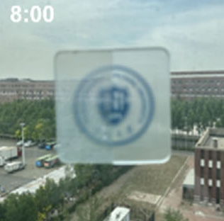

HKIE 80th Anniversary · Future-Ready Engineering Award
Future-Ready
Smart Facades
Retrofitting existing windows against solar heat and humidity, with no new glass and no power.
Ir Prof. YAN Jinyue Jerry · Dr LIU Junwei
PolyU Department of Building Environment and Energy Engineering
- 40 → 32–33°Cpeak sunlit-spot temperature, bare vs. coated room
- 78.4%visible light through the coating
- 91.7 → 53.8%relative humidity in 6 h with the MRLR film
- <3 yrcoating payback in an HKJC building
01 · Concept
Two layers,
one window
Main pane: coating blocks solar heat
Window edge: film absorbs humidity
02 · Solar-selective coating
Clear to the eye, blocks solar heat
- 78.4%visible light transmitted
- 71.3%near-infrared blocked
- 94.8%mid-infrared emissivity
- 7,500abrasion cycles, still 76.0% visible
CEJ 2025, Figs. 2 and 4 · photos: Supporting materials, Fig. 2
03 · MRLR film
Absorbs moisture at night, dried by the sun by day

- 53.8%RH after 6 h, from 91.7%
(silica gel: 72.1%) - 300cycles, ~1% performance loss
- 21.1°Clower peak in outdoor test chamber
- 0 Wpassive, driven by day–night cycle
AEM 2025, Figs. 3b, 3f, 4b, 4d
04 · Building tests
Measured in real rooms
- −11°Cvs. bare glass, direct sun >700 W/m²
- −6.5°Cvs. commercial film
05 · Hong Kong case
Coating vs. glass replacement, HKJC building

Source table
| Strategy | Option | Scope | Saving | kWh | HKD | Payback (yr) |
|---|
Supporting materials, Fig. 6
- ~25%modelled A/C saving, HK glass curtain-wall building, coating only JMCA 2025, Fig. 5
- 18.88 kgCO₂ avoided per m² per year, MRLR film, global average AEM 2025, Fig. 5
Sources
- AEM 2025 Advanced Energy Materials, e03332 · 10.1002/aenm.202503332
- JMCA 2025 J. Mater. Chem. A, 13, 2208 · 10.1039/D4TA05784H
- CEJ 2025 Chem. Eng. J., 522, 167017 · 10.1016/j.cej.2025.167017
Coverage 2026